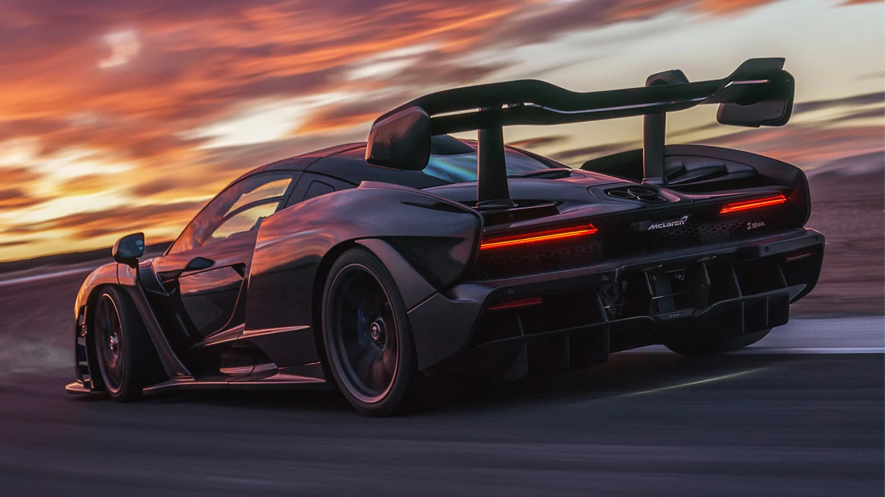

About Me
Music
Music has always been a big part of my life. I am almost always listening to music. I grew up with classic rock and metal so most of my taste has been formed around that but I'll listen to pretty much anything.
Video Games
Video games are a big pastime for me. Similar to music, I'll play pretty much anything or whatever my friends are playing. Racing games, sports games, and RPGs are some of my favorites.
Cars
I've always loved cars. The mechanical aspects and stats catch my attention just as much as a nice body line. My dream car changes constantly but I love everything from classic muscle to modern exotic supercars.
